Gulf strikes, calmer bets: Saudi airspace closure odds 5.5% (18% a month ago), Houthis into Saudi 16%. Polymarket implied odds, hourly, 60 days to Nov 23 10:38 AM ET. Bets, not forecasts. Source: https://polymarket.com/event/saudi-airspace-closed-byptptpt
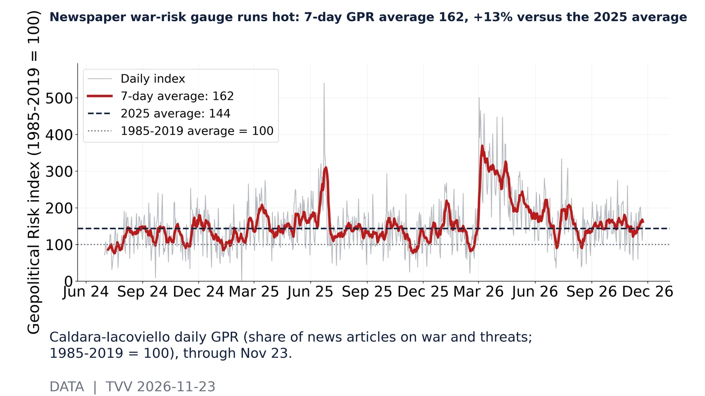
Newspaper war-risk gauge runs hot: 7-day GPR average 162, +13% versus the 2025 average. Caldara-Iacoviello daily GPR (share of news articles on war and threats; 1985-2019 = 100), through Nov 23. Source: https://www.matteoiacoviello.com/gpr.htm
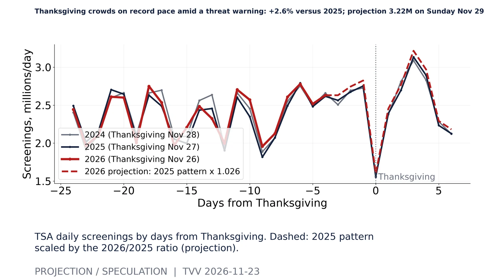
Thanksgiving crowds on record pace amid a threat warning: +2.6% versus 2025; projection 3.22M on Sunday Nov 29. TSA daily screenings by days from Thanksgiving. Dashed: 2025 pattern scaled by the 2026/2025 ratio (projection). Source: https://www.tsa.gov/travel/passenger-volumes
Storm days fade with the solar cycle: 57 G1+ days in 2026 so far (pace 64) versus 97 in 2025 and a 79-day average. GFZ Potsdam definitive Kp (days with any 3-hour Kp of 5- or more) and SILSO sunspots; NOAA SWPC sunspot prediction dashed. Source: https://kp.gfz-potsdam.de/en/data
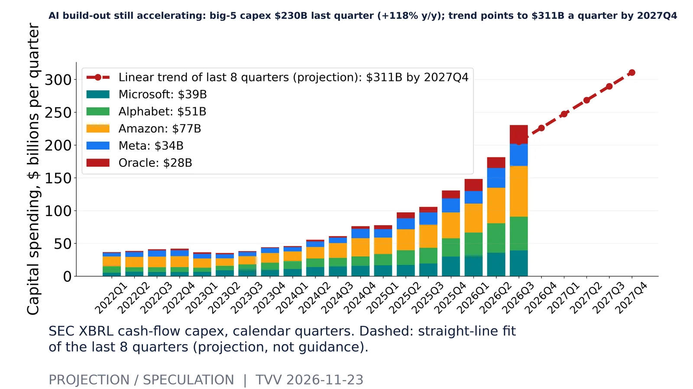
AI build-out still accelerating: big-5 capex $230B last quarter (+118% y/y); trend points to $311B a quarter by 2027Q4. SEC XBRL cash-flow capex, calendar quarters. Dashed: straight-line fit of the last 8 quarters (projection, not guidance). Source: https://data.sec.gov/api/xbrl/companyfacts/CIK0000789019.json
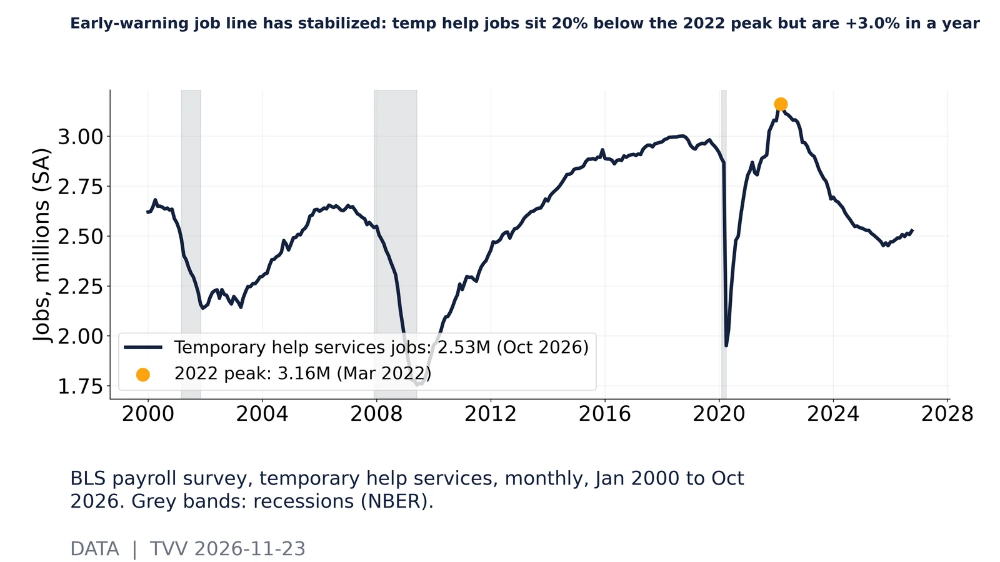
Early-warning job line has stabilized: temp help jobs sit 20% below the 2022 peak but are +3.0% in a year. BLS payroll survey, temporary help services, monthly, Jan 2000 to Oct 2026. Grey bands: recessions (NBER). Source: https://fred.stlouisfed.org/series/TEMPHELPS
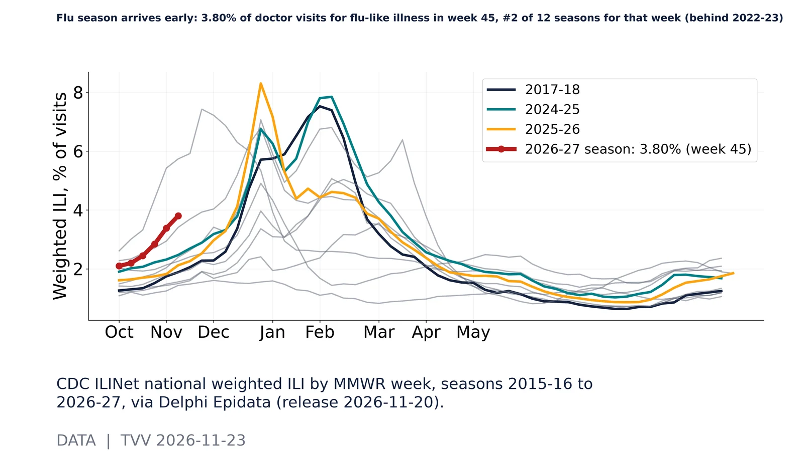
Flu season arrives early: 3.80% of doctor visits for flu-like illness in week 45, #2 of 12 seasons for that week (behind 2022-23). CDC ILINet national weighted ILI by MMWR week, seasons 2015-16 to 2026-27, via Delphi Epidata (release 2026-11-20). Source: https://www.cdc.gov/fluview/
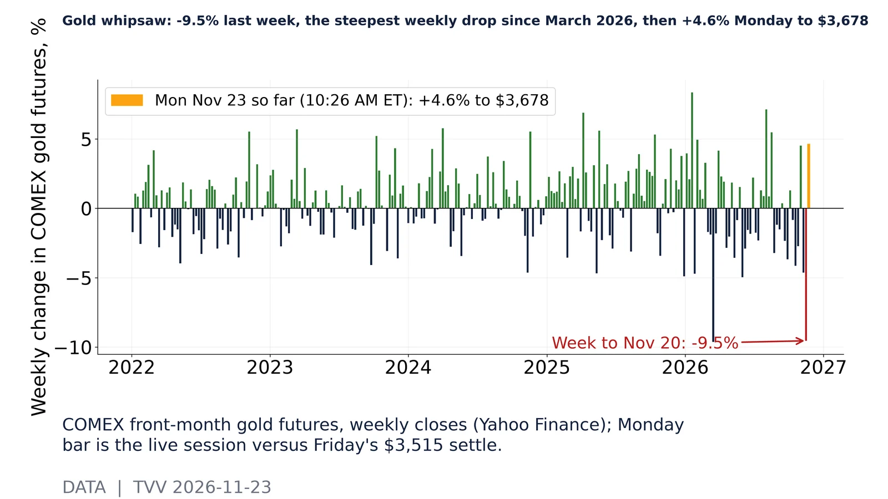
Gold whipsaw: -9.5% last week, the steepest weekly drop since March 2026, then +4.6% Monday to $3,678. COMEX front-month gold futures, weekly closes (Yahoo Finance); Monday bar is the live session versus Friday's $3,515 settle. Source: https://finance.yahoo.com/quote/GC=F
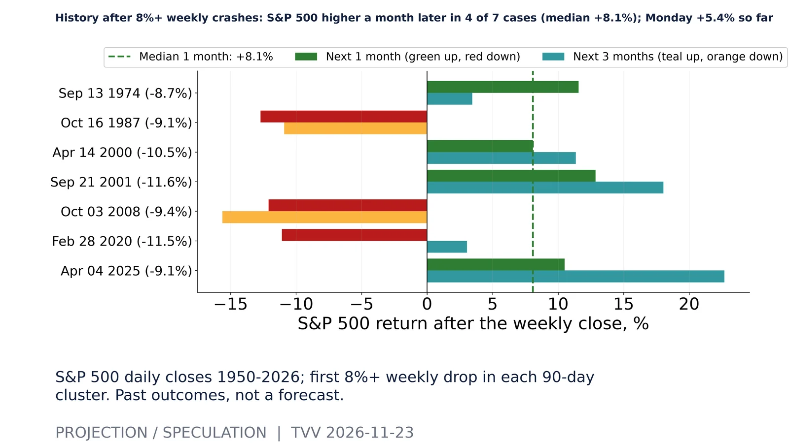
History after 8%+ weekly crashes: S&P 500 higher a month later in 4 of 7 cases (median +8.1%); Monday +5.4% so far. S&P 500 daily closes 1950-2026; first 8%+ weekly drop in each 90-day cluster. Past outcomes, not a forecast. Source: https://finance.yahoo.com/quote/%5EGSPC
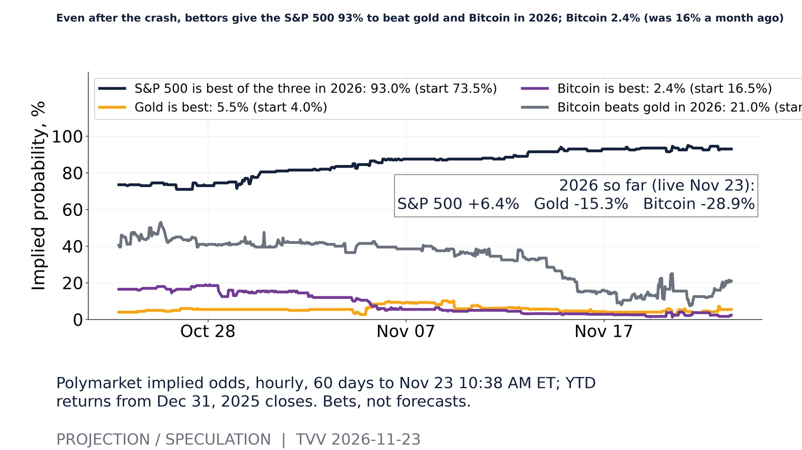
Even after the crash, bettors give the S&P 500 93% to beat gold and Bitcoin in 2026; Bitcoin 2.4% (was 16% a month ago). Polymarket implied odds, hourly, 60 days to Nov 23 10:38 AM ET; YTD returns from Dec 31, 2025 closes. Bets, not forecasts. Source: https://polymarket.com/event/bitcoin-vs-gold-vs-sp-500-in-2026
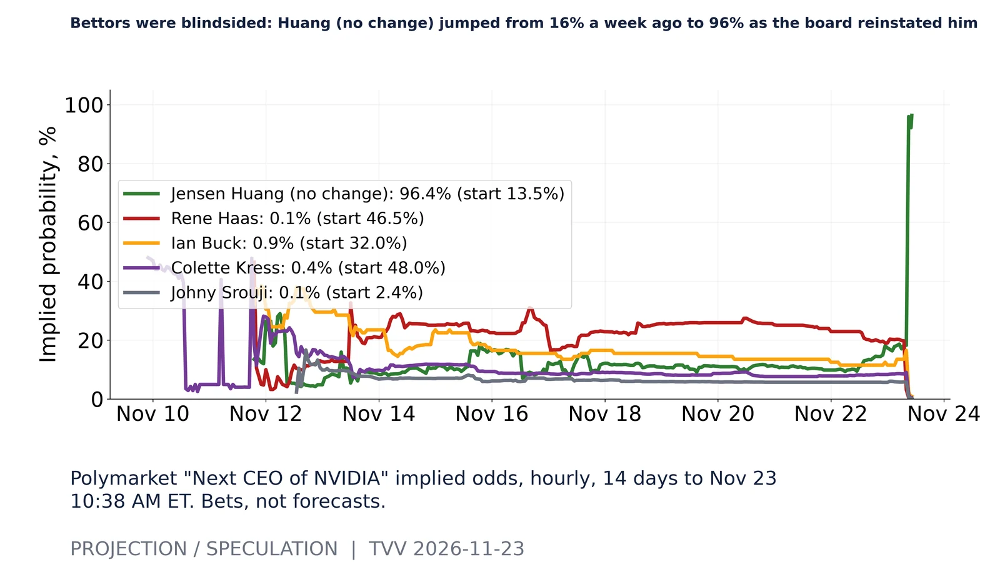
Bettors were blindsided: Huang (no change) jumped from 16% a week ago to 96% as the board reinstated him. Polymarket "Next CEO of NVIDIA" implied odds, hourly, 14 days to Nov 23 10:38 AM ET. Bets, not forecasts. Source: https://polymarket.com/event/next-ceo-of-nvidia
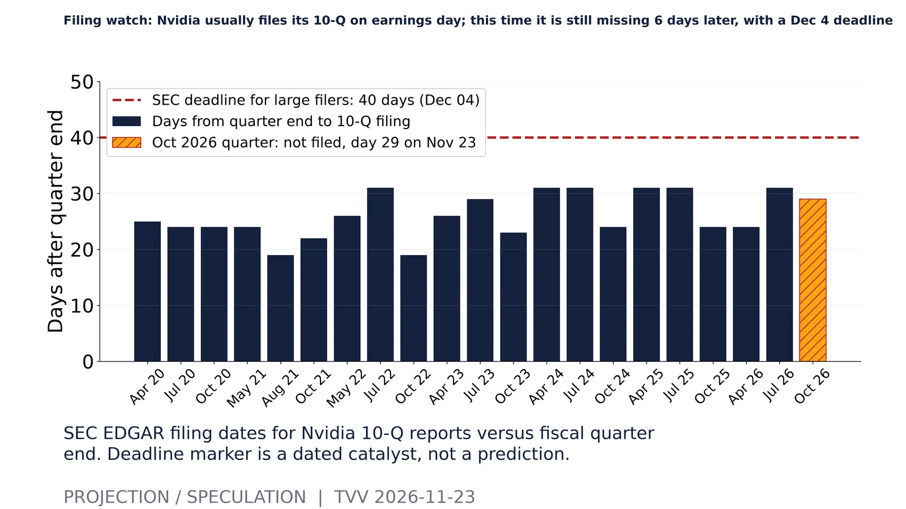
Filing watch: Nvidia usually files its 10-Q on earnings day; this time it is still missing 6 days later, with a Dec 4 deadline. SEC EDGAR filing dates for Nvidia 10-Q reports versus fiscal quarter end. Deadline marker is a dated catalyst, not a prediction. Source: https://www.sec.gov/cgi-bin/browse-edgar?action=getcompany&CIK=0001045810&type=10-Q
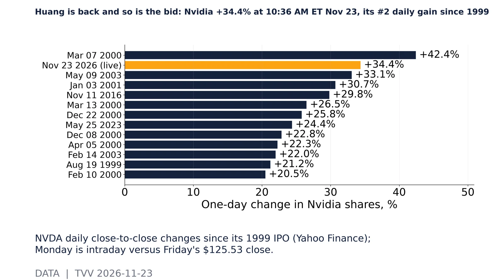
Huang is back and so is the bid: Nvidia +34.4% at 10:36 AM ET Nov 23, its #2 daily gain since 1999. NVDA daily close-to-close changes since its 1999 IPO (Yahoo Finance); Monday is intraday versus Friday's $125.53 close. Source: https://finance.yahoo.com/quote/NVDA
Leverage cuts both ways: 2x long Nvidia ETFs jump +67% Monday yet sit 60% below their 2026 high. Yahoo Finance quotes at 10:36 AM ET Nov 23 versus Friday closes and 2026 closing highs. Daily-reset funds decay in volatile markets. Source: https://finance.yahoo.com/quote/NVDL